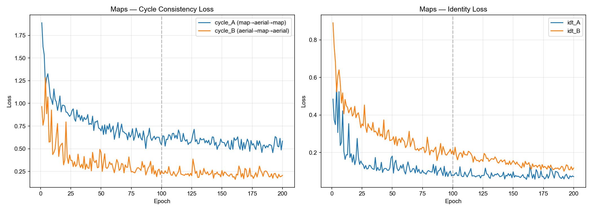
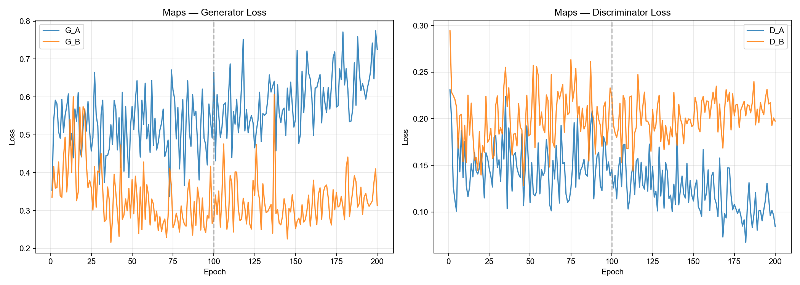
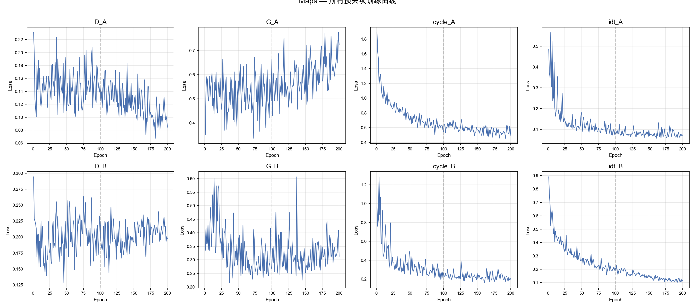
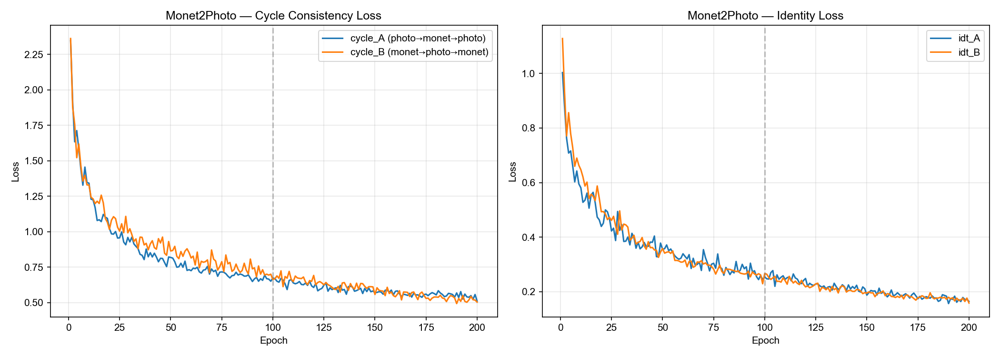
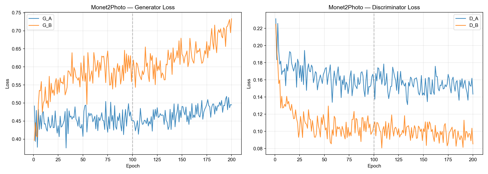
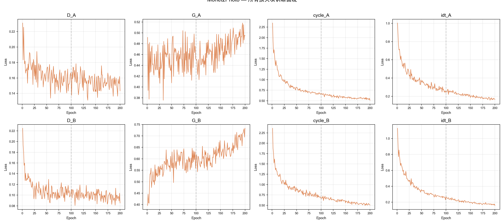
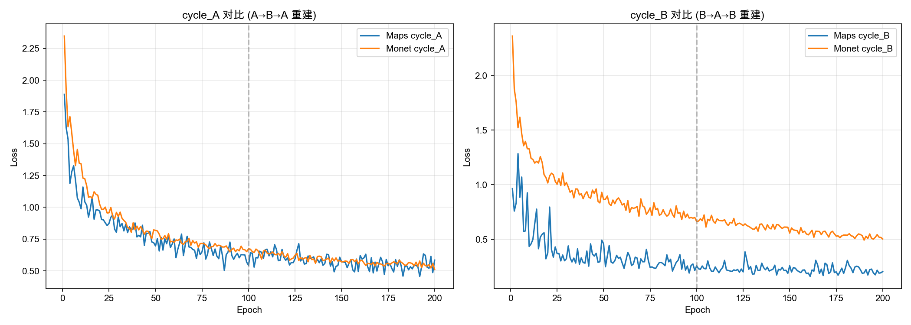
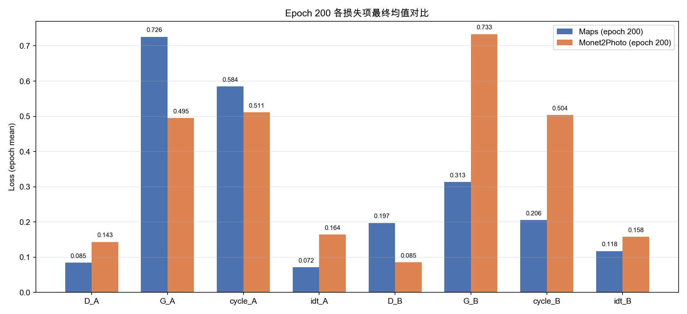

Unpaired Image-to-Image Translation using Cycle-Consistent Adversarial Networks (Zhu et al., 2017)
在三个数据集上使用训练完成的模型（epoch 200）进行推理
灰色虚线标记 epoch 100（学习率开始线性衰减）








所有超参数与论文原文完全一致
| 参数 | 值 |
|---|---|
| Generator | ResNet 9-blocks, ngf=64 |
| Discriminator | PatchGAN 70×70, ndf=64, 3层 |
| GAN Mode | LSGAN |
| Learning Rate | 0.0002 (Adam, β1=0.5) |
| λ (cycle) | 10.0 |
| λ (identity) | 5.0 (0.5 × λ) |
| Image Buffer | 50 |
| Input Size | 286 → crop 256 |
| Batch Size | 1 |
| 数据集 | 训练 | 测试 |
|---|---|---|
| Maps | ~1096 张/epoch, 200 epochs | 50 samples |
| Monet2Photo | ~6287 张/epoch, 200 epochs | 63 samples |
| Cityscapes | 使用预训练模型 | 50 samples |
| 损失项 | Maps | Monet |
|---|---|---|
| cycle_A | 0.584 | 0.511 |
| cycle_B | 0.206 | 0.504 |
| D_A | 0.085 | 0.143 |
| D_B | 0.197 | 0.085 |
| G_A | 0.726 | 0.495 |
| G_B | 0.313 | 0.733 |